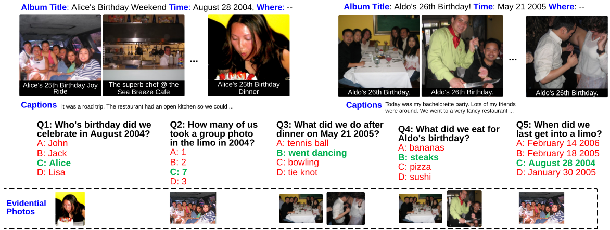
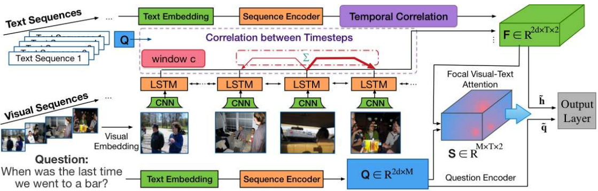
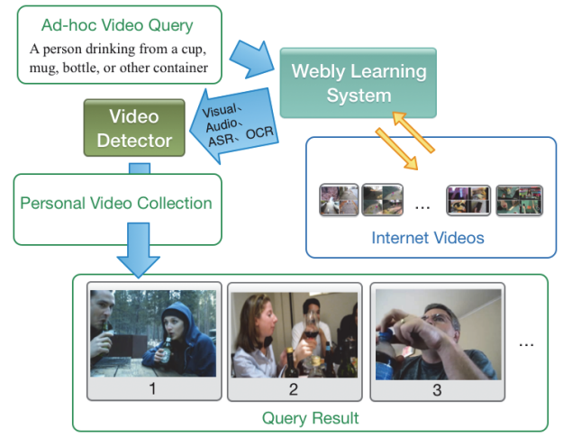
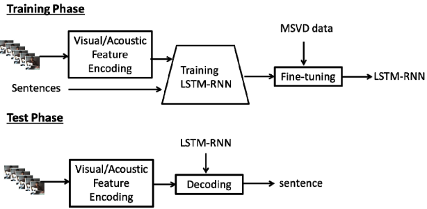

-
The Garden of Forking Paths: Towards Multi-Future Trajectory Prediction
Junwei Liang, Lu Jiang, Kevin Murphy, Ting Yu, Alexander Hauptmann
CVPR 2020.
-
Peeking into the Future: Predicting Future Person Activities and Locations in Videos
Junwei Liang, Lu Jiang, Juan Carlos Niebles, Alexander Hauptmann, Li Fei-Fei
CVPR 2019. (Translated and reported by multiple Chinese media (量子位 & 机器之心, 02/13/2019), with 30k+ views in a week.)
#1 Tensorflow-based code on PaperWithCode in Trajectory Prediction task.
-
SimAug: Learning Robust Representations from Simulation for Trajectory Prediction
Junwei Liang, Lu Jiang, Alexander Hauptmann
ECCV 2020.
-
Shooter Localization Using Social Media Videos
Junwei Liang, Jay Aronson, Alexander Hauptmann
ACM Multimedia (MM) 2019.
(Press coverage:
 ,
,
 ,
,
,
,
 ,
,
 ,
,
 ,
,
,
,
 ,
,
)
,
,
)
-

Focal Visual-Text Attention for Memex Question Answering
Junwei Liang, Lu Jiang, Liangliang Cao, Yannis Kalantidis, Li-Jia Li, and Alexander Hauptmann
In IEEE Transactions on Pattern Analysis and Machine Intelligence (TPAMI), 2019.
-

Focal Visual-Text Attention for Visual Question Answering
Junwei Liang, Lu Jiang, Liangliang Cao, Li-Jia Li, and Alexander Hauptmann
CVPR 2018. (Spotlight Paper, 6.8% acceptance rate)
-
An Event Reconstruction Tool for Conflict Monitoring Using Social Media
Junwei Liang, Desai Fan, Han Lu, Poyao Huang, Jia Chen, Lu Jiang, and Alexander Hauptmann
AAAI 2017 Demo.
-

Webly-Supervised Learning of Multimodal Video Detectors
Junwei Liang, Lu Jiang, and Alexander Hauptmann
AAAI 2017 Demo.
-
Learning to Detect Concepts from Webly-Labeled Video Data
Junwei Liang, Lu Jiang, Deyu Meng, and Alexander Hauptmann
IJCAI 2016.
-

Video Description Generation using Audio and Visual Cues
Qin Jin, and Junwei Liang
ICMR 2016.
-
Temporal Localization of Audio Events for Conflict Monitoring in Social Media
Junwei Liang, Lu Jiang and Alexander Hauptmann
ICASSP 2017.